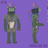
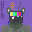
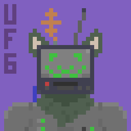
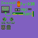

Reference Sheet

Test Card

Blep

Assets

Reference Sheet 8X





| Species | Protogen / Timber Wolf |
|---|---|
| Gender | Nonbinary / Agender |
Scintilla roughly translates to "spark" in Latin. They are a protogen with a timber wolf body. It lives in the woods, and scavenges scrap yards for parts. Whilst looking for parts it got their head stuck in a CRT TV. Its fur is a mossy green to help blend in with the forest they reside in. The mechanical part of its body runs off an RTG, hence why they find Plutonium 238 yummy.
The GIFs where made by copying a base image many times and editing it (frame by frame). These images where put in a folder and named "0.png", "1.png", ... etc. I then used a bash script to make an 8X up scaled (nearest neighbor / point) copy of each image using magick and then use ffmpeg to convert each image into a single GIF (ffmpeg creates a palette image before making the GIF to ensure quality).
.
├── gif.sh - Bash script
├── Yummers - Input folder
│ ├── 0.png - Each low resolution frame
│ ├── 1.png
│ ├── 2.png
│ ...
│ ├── 12.png
│ ├── 13.png
│ └── 14.png
└── Yummers-out - Output folder created by script
├── 0.png - Each high resolution frame created by script
├── 1.png
├── 2.png
...
├── 12.png
├── 13.png
├── 14.png
├── output.gif - Output GIF
└── palette.png - Palette to ensure quality
#!/usr/bin/env bash
DIR=Yummers # No end slash
FPS=4 # Frames per Second
SCALE=800 # Rescale percent
mkdir "$DIR-out"
# Resize
cd "$DIR"
for FILE in *;
do
magick "$FILE" -filter point -resize "$SCALE %" "../$DIR-out/$FILE"
done
# Gif
cd "../$DIR-out/"
ffmpeg -i %d.png -vf palettegen palette.png # Generate Pallete
ffmpeg -framerate $FPS -i %d.png -i palette.png -filter_complex "paletteuse" output.gif
For "Static.gif" I got white noise by downloading an image from ANU QRNG, and scaling the image down to 0.5 the original size (in each dimension) bilinearly. I then copied parts of the downscaled image onto a layer above the screen of Scintilla with varying opacity.